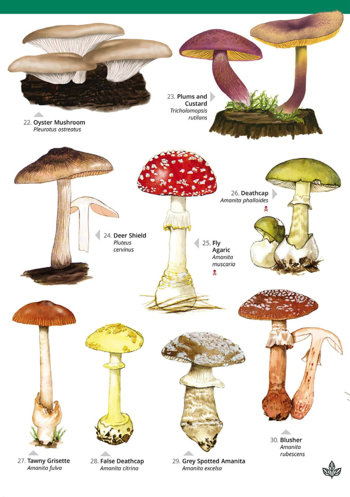

Fungi

Fungi are a diverse group of eukaryotic organisms that play crucial roles in ecosystems as decomposers, symbionts, and pathogens. They are found in a wide range of habitats, including soil, water, air, and the bodies of other organisms. Fungi exhibit a remarkable diversity of forms, lifestyles, and ecological functions, making them important components of terrestrial and aquatic ecosystems.
Key Characteristics
- 1. Eukaryotic Structure: Fungi are eukaryotic organisms, meaning they possess membrane-bound organelles and a distinct nucleus containing their genetic material. They lack chlorophyll and cannot perform photosynthesis, relying instead on organic matter for energy and nutrients.
- 2. Cellular Morphology: Fungi exhibit a variety of cellular structures, including single-celled forms (yeasts), filamentous forms (molds), and multicellular structures (mushrooms). Their cell walls are composed of chitin, a polysaccharide that provides structural support.
- 3. Heterotrophic Nutrition: Fungi obtain nutrients through extracellular digestion, secreting enzymes to break down organic matter into simpler molecules that can be absorbed by their cells. They play important roles as decomposers, saprobes, parasites, and symbionts in ecosystems.
Classification
Fungi are classified into several phyla based on their reproductive structures, cellular morphology, and ecological characteristics:
- Ascomycota: Ascomycetes are characterized by their production of sexual spores (ascospores) within sac-like structures called asci. They include yeasts, molds, and many plant pathogens such as powdery mildews and ergot fungi.
- Basidiomycota: Basidiomycetes are characterized by their production of sexual spores (basidiospores) on specialized structures called basidia. They include mushrooms, bracket fungi, rusts, and smuts.
- Zygomycota: Zygomycetes are characterized by their formation of resistant sexual spores (zygospores) through the fusion of specialized hyphae. They include bread molds and other fast-growing saprobes.
Habitat and Adaptations
Fungi inhabit diverse habitats and exhibit various adaptations:
- Decomposition: Fungi play crucial roles as decomposers, breaking down dead organic matter and recycling nutrients such as carbon, nitrogen, and phosphorus in ecosystems. They secrete enzymes to digest complex organic molecules, making nutrients available to other organisms
- Symbiotic Relationships: Many fungi form symbiotic associations with other organisms, including plants (mycorrhizae), algae (lichens), and animals (e.g., gut fungi in termites). These symbioses provide mutualistic benefits such as nutrient exchange, protection, and enhanced fitness.
- Pathogenesis: Some fungi are pathogens that cause diseases in plants, animals, and humans. They can infect their hosts through direct penetration, ingestion, or inhalation, leading to a range of symptoms from mild to severe.
Ecological and Economic Importance
- Decomposition and Nutrient Cycling: Fungi play crucial roles in nutrient cycling, organic matter decomposition, and soil formation, contributing to ecosystem functioning and productivity.
- Mycorrhizal Associations: Mycorrhizal fungi form symbiotic associations with the roots of most land plants, enhancing nutrient uptake, water absorption, and plant growth. They are important for the health and productivity of forests, grasslands, and agricultural crops.
- Ecosystem Services: Fungi provide a range of ecosystem services, including decomposition, nutrient cycling, soil formation, water filtration, and carbon sequestration. They contribute to the resilience, stability, and sustainability of ecosystems.
Conservation Challenges
Fungi face threats from habitat loss, pollution, climate change, invasive species, overharvesting, and emerging diseases. Conservation efforts focus on preserving natural habitats, restoring degraded ecosystems, promoting sustainable land management practices, and studying the ecological roles and diversity of fungi in different environments.
Fungi, with their diverse forms, ecological roles, and economic importance, are integral components of terrestrial and aquatic ecosystems. Understanding and conserving these organisms is essential for maintaining ecosystem health, biodiversity, and the sustainable use of natural resources.